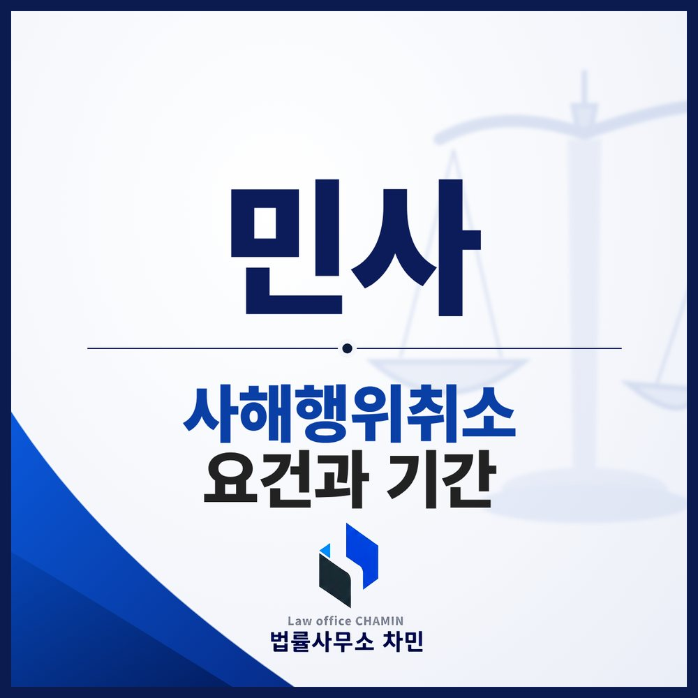

핵심 답변
빼돌린 재산도 되돌릴 수 있습니다. 다만 1년·5년 기간을 넘기면 권리를 잃습니다.
돈을 빌려 간 사람이 갚지 않으면서 하나뿐인 아파트를 가족이나 지인에게 넘겨 버리면, 소송에서 이겨도 강제집행할 재산이 없게 됩니다. 이럴 때 쓰는 것이 사해행위취소소송입니다. 반대로 정당한 거래였는데 사해행위라고 공격받는 경우도 있습니다. 양쪽 모두 알아야 할 핵심을 정리했습니다.

사해행위취소소송이란
채무자가 채권자를 해친다는 것을 알면서 재산을 처분했을 때, 채권자가 그 처분을 취소하고 재산을 되돌려 달라고 법원에 청구하는 소송입니다(민법 제406조). 예를 들어 A가 B에게 1억 원을 빌린 뒤 유일한 재산인 아파트를 친구 C에게 헐값에 넘겼다면, B는 C를 상대로 그 매매를 취소하고 아파트를 A 앞으로 되돌리라고 청구할 수 있습니다.
성립 요건 네 가지
- 재산 처분 행위 — 매매, 증여, 담보 설정, 채무 부담 등
- 채권자를 해하는 행위 — 그 행위로 채무자 재산이 줄어 채권자가 변제받기 어려워져야 합니다.
- 채무자의 사해의사 — 채무 초과 상태에서 재산을 처분했다면 대개 인정됩니다.
- 수익자·전득자의 악의 — 채무자의 사해의사가 인정되면, 재산을 받은 사람이 몰랐다는 점은 그 사람이 증명해야 합니다.
자주 문제 되는 유형
- 부동산 증여 — 채무 초과 상태에서 자녀나 배우자에게 무상으로 넘긴 경우는 사해행위로 인정되는 경우가 많습니다.
- 저가 매매 — 시가보다 훨씬 싸게 판 경우는 물론, 제값을 받았더라도 가족이나 지인에게 판 경우 문제 될 수 있습니다. 공인중개사를 통해 모르는 사람에게 정상 가격으로 판 경우는 매수인의 선의가 인정되는 경향이 있습니다.
- 특정 채권자에게만 담보 설정 — 채무 초과 상태에서 일부 채권자에게만 근저당을 설정해 주면 다른 채권자를 해하는 행위가 될 수 있습니다.
- 과도한 이혼 재산분할 — 정당한 재산분할은 사해행위가 아니지만, 상당한 정도를 넘는 부분은 취소될 수 있습니다.
누구를 상대로 하나
원칙적으로 재산을 넘겨받은 수익자가 피고입니다. 수익자가 다시 다른 사람(전득자)에게 넘겼다면 전득자도 상대로 해야 하는데, 전득자가 사정을 몰랐다면 그 사람에게서 재산을 되찾을 수 없고 수익자에게 돈으로 배상(가액배상)을 청구하게 됩니다. 그래서 재산이 더 넘어가기 전에 빨리 소송을 내고 처분금지가처분으로 묶어 두는 것이 중요합니다.
기간 — 1년과 5년
채권자가 취소원인을 안 날부터 1년, 법률행위가 있은 날부터 5년 안에 소송을 내야 합니다(같은 법 제406조 제2항). ‘취소원인을 안 날’은 처분 사실을 안 날이 아니라 그것이 채권자를 해하는 행위라는 것까지 안 날을 말하지만, 그 시점을 두고 다툼이 많으므로 의심이 들면 서둘러야 합니다. 또 취소의 기초가 되는 채권은 원칙적으로 사해행위 전에 생긴 것이어야 합니다.
이기면 어떻게 되나
처분이 취소되고 재산이 채무자 명의로 돌아오며, 그 재산에 강제집행할 수 있습니다. 취소와 원상회복은 모든 채권자의 이익을 위해 효력이 있습니다(같은 법 제407조). 재산 자체를 되돌릴 수 없으면 가액배상으로 수익자에게 돈을 직접 받을 수 있습니다. 판결 뒤에도 또 다른 처분이 생기지 않도록 집행을 서둘러야 합니다.
재산을 넘겨받은 쪽이라면
채무자에게 다른 재산이 충분했다는 점, 적정한 대가를 냈다는 점, 사정을 몰랐다는 점, 채권이 처분 이후에 생겼다는 점, 기간이 지났다는 점 등을 다툴 수 있습니다. 실질은 재산분할인데 증여로 등기한 경우처럼 형식과 실질이 다르다면 그 경위 자료를 내야 합니다. 거래 당시의 대금 지급 내역과 시세 자료를 확보해 두세요.
군산에서 사해행위를 의심한다면
등기부로 재산이 언제 누구에게 넘어갔는지 확인하고, 채무자의 재산 상태와 내 채권의 근거를 정리한 뒤 처분금지가처분과 소송을 함께 준비하세요. 재산을 숨기거나 허위로 넘긴 경우라면 강제집행면탈 칼럼처럼 형사고소도 함께 검토할 수 있습니다.